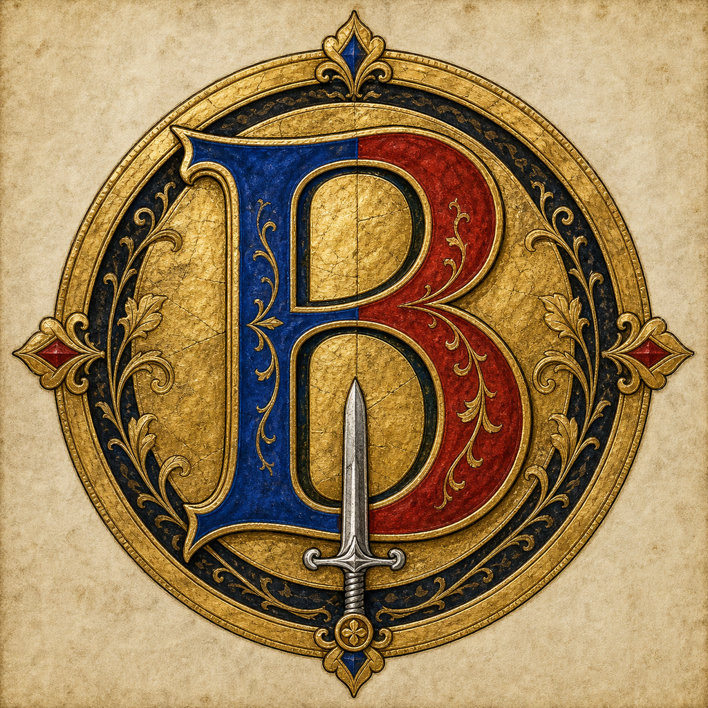
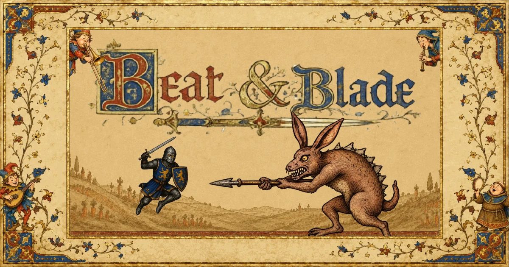

Defi du Roi hebdomadaire
Un champ de bataille definit la semaine. Battez le score du champion et la couronne change de main.

Beat & BladeCandidature Mewo Dev Challenge
Affrontez le champion de la semaine, frappez les notes en rythme, prenez la couronne et laissez un decret royal aux prochains challengers.

Bande-annonce
La video montre la boucle principale : entrer dans le duel, lire le rythme, survivre au boss et viser la couronne hebdomadaire.
Boucle native Reddit
Beat & Blade utilise le subreddit comme une partie du jeu, pas seulement comme un endroit ou publier un post. Le defi hebdomadaire donne une cible commune a toute la communaute.
Un champ de bataille definit la semaine. Battez le score du champion et la couronne change de main.
Le champion peut ecrire une courte proclamation visible par les prochains challengers.
Les joueurs votent entre plusieurs morceaux candidats pour choisir le prochain boss.
Des posts programmes couronnent le vainqueur, affichent le classement final et annoncent le prochain defi.
Gameplay
Les notes arrivent dans quatre directions : gauche, haut, bas et droite. Le timing construit le score, le combo, la charge de soin et le rang final. Les erreurs coutent des coeurs.
Le jeu se cale sur l'horloge Web Audio, afin que le jugement suive la musique plutot que le nombre d'images par seconde. Desktop et mobile ont des layouts separes, adaptes aux contraintes du webview Reddit.
Construction
Difficultes
Les points les plus durs n'etaient pas decoratifs : lisibilite mobile, temps de chargement, demarrage audio et jugements rythmiques coherents entre appareils.
Reduction du premier chargement et report des assets non essentiels apres la musique du menu.
Creation d'un layout portrait dedie au combat, plutot qu'une simple reduction de la vue desktop.
Synchronisation du gameplay sur le temps audio, pas sur le temps de rendu.
Concentration de la candidature sur le mode competitif hebdomadaire pour garder un hook clair.
Liens de candidature